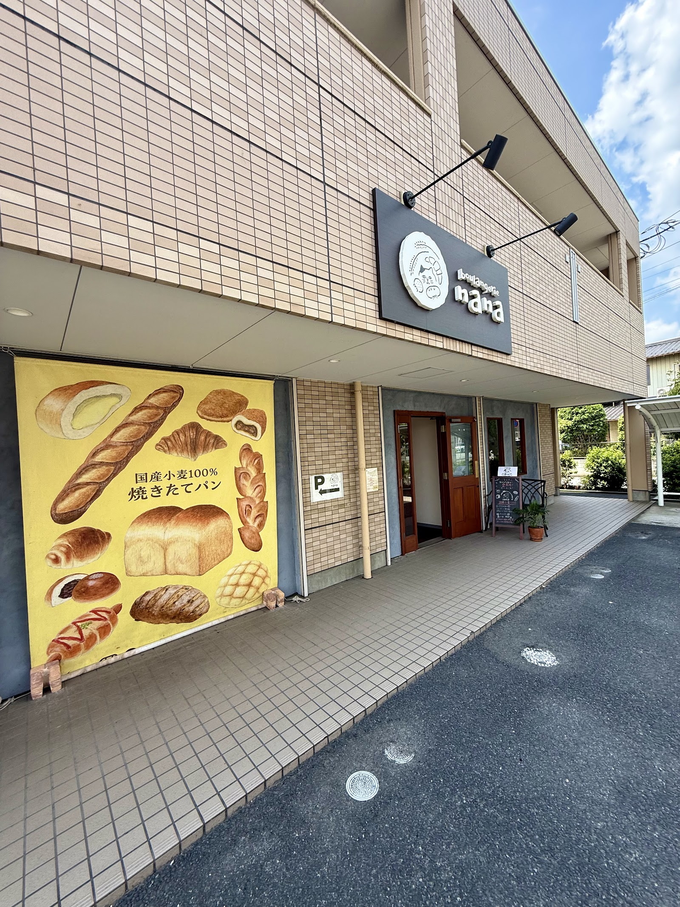

③
麦畑からパンへ
boulangerie nanaでは、国産小麦を使ったパンづくりをしています。店先の暖簾にも「国産小麦100% 焼きたてパン」と掲げているとおり、粉選びから丁寧に向き合うことを大切にしています。



⑤
お客様のノートより
Googleでは3.9の評価をいただいています(クチコミ68件)。実際にいただいたお声の一部をご紹介します。
「優しいお味なのは国産小麦を使ってるからでしょうか」
「国産小麦の美味しさが感じられ、とても丁寧に作られているんだなぁと思います。」